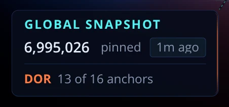
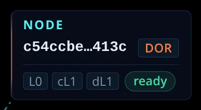
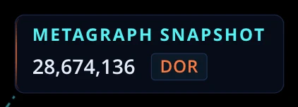
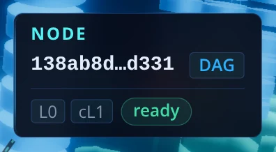
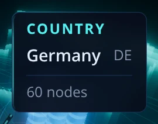
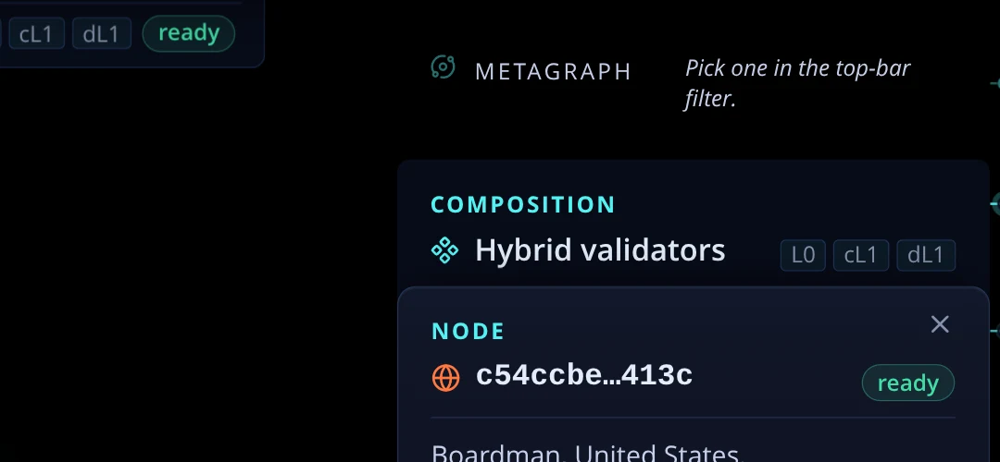

Now

Five suggestions for the labels the scene draws beside a selected thing. Each shows the callout as it is today (a photo from the running app) and how it would look. A dashed yellow frame marks what is new. Answer with the numbers you want. Nothing here is built.
The ring points at Dor's part of the bar, and the bar's length is its size in bytes. The label only counts ("13 of 16 anchors"). Say the count in the card's word, snapshots, and add the size on the right. The age also moves before "pinned", the order the card's head uses.

In Snapshots a node is selected as a signer of the snapshot above it, and its card opens with exactly that. The label only lists layers and status, the same as in every other view. One short line adds the reason. Hypergraph and Geography keep the label as it is.

The scene draws a node that is not ready as a hollow chip. While every node is ready the label stays as it is. When some are not, the count turns into "15 of 17 nodes ready", so the hollow chips have a number beside them. (The second drawing is an example state; Dor had all 17 ready when the photo was taken.)
Each card has a small mark before its title: a cube for a global snapshot, stacked cubes for a metagraph snapshot, a globe for a node, a pin for a country, a server for a provider, the logo for a metagraph. The callouts have none, so the only thing tying a label to its card is reading both. With the same mark, the two pair at a glance. Nothing else in these six changes.



A callout drops below its subject when it would run off the top of the scene. The scene continues behind the top bar, so that check passes while the label is half hidden under the bar, as in this photo from Hypergraph: only the bottom row of the node's label shows. It should measure from the bar's bottom edge. Nothing changes in how the label looks.
